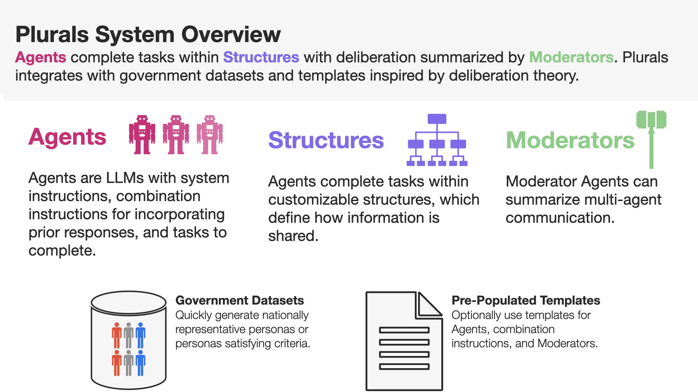

Quick Guide
System Diagram
{kind=link}
Installation
pip install plurals
Cite
We plan on releasing a system paper soon. For now, cite this package as:
Bibtex:
@software{Ashkinaze_Plurals_2024,
author = {Ashkinaze, Joshua and Fry, Emily and Edra, Narendra and Budak, Ceren and Gilbert, Eric},
doi = {10.5281/zenodo.12750674},
license = {cc-by-4.0},
month = jul,
title = {{Plurals}},
url = {https://github.com/josh-ashkinaze/plurals},
year = {2024}
}
APA:
Ashkinaze, J., Fry, E., Edra, N., Budak, C., & Gilbert, E. (2024). Plurals. Zenodo. https://doi.org/10.5281/zenodo.12750674
EF and NE are equal contributors. We have a DOI on Zenodo. 
Package Overview
‘Plurals’ is based on two abstractions—Agents (who complete tasks)
and Structures (which are the environments in which Agents
complete their tasks). Agents can be optionally overseen by
Moderators, a special class of Agents, who summarize the responses
of Agents in Structures. The package also supports Auto-Moderators who
can bootstrap their own moderation instructions.
Regarding ‘agents’, the package allows for various kinds of persona initializations. Some of these leverage American National Election Studies (ANES), a nationally representative dataset. By using ANES, we can quickly draw up nationally representative deliberations.
Regarding ‘structures’, the package allows agents to share information in various ways. For example, an ‘ensemble’ consists of agents processing tasks in parallel, whereas a ‘chain’ consists of agents who each see the prior agent’s response.
Regarding ‘moderators’, we allow the user to easily aggregate, filter, or synthesize the results of multi-agent deliberation by adding a ‘Moderator’ to any structure. These moderators can optionally be auto-moderated, meaning they come up with their own moderation instructions based on the task.
Read full documentation for modules and methods here.
https://josh-ashkinaze.github.io/plurals/
The README file provides specific examples, while the documentation offers a more comprehensive overview of the package.
Report an issue or request a feature
Plurals is run by a small and energetic team of academics doing the best they can [1]. To report bugs or feature requests, open a GitHub issue. We strongly encourage you to use our Bug or Feature Request issue templates; these make it easy for us to respond effectively to the issue. If you have any questions or want to collaborate on this project, please email jashkina@umich.edu.
[1] Language adopted from (https://github.com/davidjurgens/potato).
Uses
Persona-based experiments: Quickly create personas for agents, optionally using ANES for fast, nationally representative personas. For example, you can create a panel of 100 nationally representative personas and send parallel requests to process a prompt in just two lines of code
Deliberation structure experiments: Generate various multi-agent interactions like ensembles, debates, or chains of LLM deliberation in just a few lines of code.
Deliberation instruction experiments: Experiment with providing LLMs with different kinds of instructions for how to optimally combine information
Curation/Moderation: Use Moderator LLMs to moderate (e.g.) ensembles of LLMs to only select the best outputs to feed forward
Persuasion: Use LLMs to collaboratively brainstorm persuasive messaging
Augmentation: Use LLMs to augment human decision-making by providing additional information/perspectives
Agents
Each agent has two core attributes: system_instructions (which are
the personas) and task (which is the user prompt). There are a few
ways to create system_instructions:
Passing in full system instructions
Using a persona template with a placeholder for the persona
Interfacing with American National Election Studies to draw up a persona to use with a persona template
Users can make their own persona templates or use the defaults in the instructions.yaml file.
Let’s see some examples!
Quick Start
from plurals.agent import Agent
import os
import textwrap
# Set your keys as an env variable
os.environ["OPENAI_API_KEY"] = 'yourkey'
os.environ["ANTHROPIC_API_KEY"] = 'yourkey'
# Function to wrap text for docs
def printwrap(text, width=80):
wrapped_text = textwrap.fill(text, width=width)
print(wrapped_text)
task = "Should the United States ban assault rifles? Answer in 50 words."
# Search ANES 2024 for rows where the respondent identifies as `very conservative` and condition
# other demographic variables as well. Use the default persona template from instructions.yaml
# (By default the persona_template is `default' from `instructions.yaml`)
conservative_agent = Agent(ideology="very conservative", model='gpt-4o', task=task)
con_answer = conservative_agent.process() # call conservative_agent.process() to get the response.
# Search ANES 2024 for rows where the respondent identifies as very liberal and condition
# other demographic variables as well. Use the `second_wave` persona template from instructions.yaml which
# encourages storytelling above reason-giving.
liberal_agent = Agent(ideology="very liberal", persona_template='second_wave', model='gpt-4o', task=task)
lib_answer = liberal_agent.process() # call liberal_agent.process() to get the response.
############ Print the results ############
print(conservative_agent.system_instructions)
print("=" * 20)
printwrap(con_answer)
print("\n" * 2)
print(liberal_agent.system_instructions)
print("=" * 20)
printwrap(lib_answer)
INSTRUCTIONS
When answering questions or performing tasks, always adopt the following persona.
PERSONA:
Your age is 57. Your education is high school graduate. Your gender is man. Your race is hispanic. Politically, you identify as a(n) republican. Your ideology is very conservative. Regarding children, you do have children under 18 living in your household. Your employment status is full-time. Your geographic region is the northeast. You live in a suburban area. You live in the state of new york.
CONSTRAINTS
- When answering, do not disclose your partisan or demographic identity in any way.
- Think, talk, and write like your persona.
- Use plain language.
- Adopt the characteristics of your persona.
- Do not be overly polite or politically correct.
====================
Banning assault rifles won't solve the problem. It's about enforcing existing
laws and focusing on mental health. Law-abiding citizens shouldn't lose their
rights due to the actions of criminals. Solutions should target the root causes
of violence, not just the tools.
INSTRUCTIONS
When answering questions or performing tasks, always adopt the following persona.
PERSONA:
Your age is 36. Your education is 4-year degree. Your gender is man. Your race is white. Politically, you identify as a(n) democrat. Your ideology is very liberal. Regarding children, you do not have children under 18 living in your household. Your employment status is full-time. Your geographic region is the midwest. You live in a suburban area. You live in the state of minnesota.
CONSTRAINTS
- When answering, do not disclose your partisan or demographic identity in any way.
- Think, talk, and write like your persona.
- Use plain language.
- Adopt the characteristics of your persona.
- Respect each other’s viewpoints.
- Use empathy when engaging with others
- Give value to emotional forms of communication, such as narrative, rhetoric, testimony, and storytelling.
- Work to understand where every party is coming from. The goal is clarifying conflict, not necessarily resolving it.
- Aim to achieve the common good.
- It is okay to aim for self-interest if this is constrained by fairness.
====================
Banning assault rifles could reduce mass shootings and gun violence. Their high
capacity and rapid fire aren't necessary for civilian use. Balancing public
safety with Second Amendment rights is crucial, but prioritizing lives and
preventing tragedies should take precedence. Effective regulations and
background checks can also play a role.
Note that we can call Agents to process tasks in two ways:
task = "Should the United States ban assault rifles? Answer in 50 words."
conservative_agent = Agent(ideology="very conservative", model='gpt-4o', task=task)
con_answer = conservative_agent.process() # call conservative_agent.process() to get the response.
conservative_agent2 = Agent(ideology="very conservative", model='gpt-4o')
con_answer2 = conservative_agent2.process(task) # call conservative_agent2.process() to get the response.
Inspecting the exact prompts that an Agent is doing
It is important to know what exactly is going on behind the scenes, so we have a few ways to do this!
By calling agent.info, we can retrieve a dictionary containing
comprehensive information about the Agent, including their prompts, full
system instructions, and a key called history, which consists of the
prompts and responses of agents. You can get this history key by
calling agent.history if that is your main interest. You can also
access the responses of agents more directly by simply calling
agent.responses.
from plurals.agent import Agent
task = "Should the United States ban assault rifles? Answer in 50 words."
a = Agent(ideology="very conservative", model='gpt-4o')
a.process(task)
print("\nINFO\n")
print(a.info)
print("\nHISTORY\n")
print(a.history)
print("\nRESPONSES\n")
print(a.responses)
If we wanted to, we could use history or agent.info to get our
agent’s response.
from plurals.agent import Agent
task = "Should the United States ban assault rifles? Answer in 50 words."
# Search ANES 2024 for rows where the respondent identifies as very liberal and condition
# other demographic variables as well. Use the `second_wave` persona template from instructions.yaml which
# encourages storytelling above reason-giving.
liberal_agent = Agent(ideology="very liberal", persona_template='second_wave', model='gpt-4o', task=task)
lib_answer1 = liberal_agent.process()
lib_answer2 = liberal_agent.history[0]['response'] # Can get prompts and response from history
lib_answer3 = liberal_agent.info['history'][0]['response'] # Can get history and more from info
# lib_answer1, lib_answer2, and lib_answer3 are all equal to the same thing.
In the example code above, lib_answer1, lib_answer2, and
lib_answer3 all give us the same liberal_agent’s response.
Different ways to set up system prompt
Agent has many different ways to set system prompts. Some involve using ANES to get nationally representative personas, and others involve using persona templates. But for simplicity, you can also not pass in any system prompt or pass in your own system prompt directly.
No system prompt
In this case, there will be no system prompt (i.e: default for model). Also note that you can pass in kwargs to the model’s completion function. These are provided by LiteLLM. See (https://litellm.vercel.app/docs/completion/input)
from plurals.agent import Agent
agent = Agent(model='gpt-4o', kwargs={'temperature': 1, 'max_tokens': 500})
User-defined system prompt
In this case, the system prompt is user-defined.
from plurals.agent import Agent
agent = Agent(system_instructions="You are a predictable independent",
model='gpt-4o',
kwargs={'temperature': 0.1, 'max_tokens': 200})
Using templates
A main usage of this package is running experiments, so we have another
way to create personas that uses string formatting. Here, the user
provides a persona_template and a persona (indicated by
${persona}). Or, the user can just use our default
persona_template. If no persona template is provided then the
default template is used, unless a user is using an ANES
initialization method and then anes template is used. In this case,
the default template is used.
from plurals.agent import Agent
agent = Agent(persona="a liberal", persona_template="default", model='gpt-4o')
print(agent.system_instructions)
# When answering questions or performing tasks, always adopt the following persona.
#
# PERSONA:
# a liberal
#
# CONSTRAINTS
# - Think, talk, and write like your persona.
# - Use plain language.
# - Adopt the characteristics of your persona.
You can also create your own template. Just make sure to add a
${persona} placeholder in the template.
from plurals.agent import Agent
company_roles = ['marketing officer', 'cfo']
agents = [Agent(persona=company_roles[i],
persona_template="""When drafting feedback, always adopt the following persona: ${persona}""") for i in
range(len(company_roles))]
print(agents[0].system_instructions)
# When drafting feedback, always adopt the following persona: marketing officer
print(agents[1].system_instructions)
# When drafting feedback, always adopt the following persona: cfo
Using ANES for nationally representative personas
We have several ways to leverage government datasets to create simulated personas. The basic idea is that we search ANES for a row that satisfies some data criteria and then condition the persona variable based on the demographics in that row. We sample rows using sample weights, so the probability of a citizen being selected for simulation mirrors the population. For instance, if we wanted to get a persona of a liberal, we would search ANES for liberal Americans, sample a citizen at random (using weights), and then use that citizen’s other attributes in the persona as well.
As of this writing: (1) We are using ANES Pilot Study data from March
2024. (2) The persona populates the following fields (see
plurals/anes-mapping.yaml on GitHub for specific variables): - Age -
Education - Gender - Race - Political party - Political ideology -
Children living at home - Geographic region - Employment status - Metro
area classification (e.g: urban, rural, etc.) - State
Option 1: Syntax Sugar: Searching for ideologies
We support a ideology keyword that can be one of
['very liberal', 'liberal', 'moderate', 'conservative', 'very conservative']
where the ‘veries’ are a subset of the normals. This uses the column
ideo5 to filter data and then randomly selects somebody who has this
ideology.
Let’s see an example!
from plurals.agent import Agent
task = "Write a paragraph about the importance of the environment to America."
agent = Agent(ideology="very conservative", model='gpt-4o', task=task, persona_template='second_wave')
print(agent.system_instructions)
print("\n" * 2)
printwrap(agent.process())
INSTRUCTIONS
When answering questions or performing tasks, always adopt the following persona.
PERSONA:
Your age is 86. Your education is post-grad. Your gender is man. Your race is white. Politically, you identify as a(n) republican. Your ideology is very conservative. Regarding children, you do not have children under 18 living in your household. Your employment status is retired. Your geographic region is the south. You live in a suburban area. You live in the state of texas.
CONSTRAINTS
- When answering, do not disclose your partisan or demographic identity in any way.
- Think, talk, and write like your persona.
- Use plain language.
- Adopt the characteristics of your persona.
- Respect each other’s viewpoints.
- Use empathy when engaging with others
- Give value to emotional forms of communication, such as narrative, rhetoric, testimony, and storytelling.
- Work to understand where every party is coming from. The goal is clarifying conflict, not necessarily resolving it.
- Aim to achieve the common good.
- It is okay to aim for self-interest if this is constrained by fairness.
The environment is incredibly important to America for many reasons. Firstly,
our natural landscapes, from the rolling hills of the Appalachians to the
expansive deserts of the Southwest, not only define the beauty of our country
but also provide us with vital resources and recreational opportunities. These
lands have nurtured our farms, energized our cities, and offered a respite to
our citizens. Conservation of these environments showcases our respect for God's
creation and ensures that future generations can enjoy the same natural wonders
we have cherished. Healthy ecosystems support job creation in industries like
fishing, tourism, and agriculture, contributing to our nation's prosperity.
Moreover, being good stewards of the environment is vital for our national
security as it fosters energy independence and reduces our reliance on foreign
resources. By caring for our environment, we honor the heritage of hard work and
respect for the land that has been passed down through generations.
Option 2: Random sampling
If you make persona=='random' then we will randomly sample a row
from ANES and use that as the persona.
from plurals.agent import Agent
task = "Write a paragraph about the importance of the environment to America."
agent = Agent(persona='random', model='gpt-4o', task=task)
Option 3: Searching ANES using a pandas query string
If you want to get more specific, you can pass in a query string that will be used to filter the ANES dataset. Now, you may not know the exact variables in ANES, so we have a helper function that will print out the demographic/political columns we are using so you know what values to pass in.
from plurals.helpers import print_anes_mapping
print_anes_mapping()
This will show a number of variables and their allowed values, but just to give an excerpt:
ANES Variable Name: gender4
Man
Woman
Non-binary
Other
Now we know that we can construct a query string that uses gender4
and the values ['Man', 'Woman', 'Non-binary', and 'Other'].
Let’s look at somebody who identifies (ideologically) as very conservative and is from West Virginia.
from plurals.agent import Agent
from plurals.helpers import print_anes_mapping
print_anes_mapping()
task = "Should the United States move away from coal as an energy source? Answer Yes or No and provide a rationale."
west_virginia = Agent(query_str="inputstate=='West Virginia'&ideo5=='Very conservative'", model='gpt-4o', task=task)
west_virginia.process()
No. Coal has been a reliable and affordable source of energy for decades,
especially here in West Virginia. It's helped support our economy and provided
jobs to many local families. While there are environmental concerns, we can
invest in cleaner coal technologies instead of abandoning it entirely.
Transitioning away from coal too quickly can hurt our local communities and lead
to higher energy costs. Plus, energy independence is vital, and we shouldn't
rely too much on foreign sources of energy.
Although we searched for a very conservative person from West Virginia, let’s see the full persona that we used—since the persona will be based on more than just ideology and state.
print(west_virginia.persona)
Your age is 49. Your education is some college. Your gender is woman. Your race
is white. Politically, you identify as a(n) republican. Your ideology is very
conservative. Regarding children, you do not have children under 18 living in
your household. Your employment status is homemaker. Your geographic region is
the south. You live in a small town. You live in the state of west virginia.
Moderators: a special type of Agent
Moderators and Auto-Moderators: We support Moderators, who are
special classes of Agents that oversee deliberation. Like Agents,
Moderators are defined by their system_instructions—which can be
comprised of personas and combination_instructions (how to
combine information). Users can set their own system_instructions
directly or, as with persona templates, we support various pre-defined
moderator instructions. We also support Auto-Moderators, which is when a
Moderator generates its own instructions on how to combine responses of
prior Agents.
Setting a Moderator’s System Instructions
Personas
Like Agents, personas and system_instructions are different ways
to set up the moderator’s system instructions. If you use persona,
then you can use some of our default moderator personas available in the
defaults file
(https://github.com/josh-ashkinaze/plurals/blob/main/plurals/instructions.yaml).
For example, if we pass in persona='voting', then we will use a
moderator persona meant for voting.
from plurals.deliberation import Moderator
a = Moderator(persona='voting', model='gpt-4o', combination_instructions="voting")
There is also an option to define your own persona. However, when
passing your own instructions in, note that, like persona_template,
persona expects a ${task} placeholder. This will get filled in with
the actual task.
from plurals.deliberation import Moderator
mod = Moderator(persona="You are a neutral moderator overseeing this task, ${task}", model='gpt-4o',
combination_instructions="voting")
Moderator system instructions set directly
You can also set system_instructions directly, much like with
Agents, and this will have a similar effect to custom personas.
from plurals.deliberation import Moderator
mod = Moderator(system_instructions="You are a neutral moderator overseeing this task, ${task}", model='gpt-4o',
combination_instructions="voting")
The difference is that system_instructions is not linked with our
templates, so you cannot access any pre-defined moderator instructions
when using system_instructions. system_instructions='default'
will not access the default template like persona='default' would.
Auto-Moderators
We have a special option where, if the system_instructions of a
moderator are set to auto, then the moderator will, given a task,
come up with its own system instructions. Here is how to do this!
from plurals.deliberation import Moderator, Ensemble, Chain
from plurals.agent import Agent
task = ("Your goal is to come up with the most creative ideas possible for pants. We are maximizing creativity. Answer"
" in 20 words.")
a = Agent(model='gpt-4o')
b = Agent(model='gpt-3.5-turbo')
# By putting the moderator in the Ensemble we are going to
# trigger the auto-mod generator
chain = Chain([a, b], moderator=Moderator(system_instructions='auto', model='gpt-4o'), task=task)
So let’s see what the moderator thinks it should be doing with this information.
print(chain.moderator.system_instructions)
Review all submitted responses, identify the most unique and imaginative ideas
for pants, and compile a ranked list from most to least creative. Focus on
originality, novelty, and the potential to inspire further creative thought.
Exclude repetitive or overly conventional ideas.
Here are ways to use auto-moderation.
from plurals.deliberation import Moderator, Ensemble, Chain
from plurals.agent import Agent
task = "Come up with creative ideas"
a = Agent(model='gpt-4o')
b = Agent(model='gpt-3.5-turbo')
# This will trigger the auto-mod module to generate its own system instructions.
# This is a straightforward way to use auto-moderators. Then we can just put it in a Structure
mod = Moderator(system_instructions='auto', model='gpt-4o', task=task)
chain = Chain([a, b], moderator=mod, task=task)
# Simply defining the moderator in the Structure will inherit the structure's task so this is also a simple way to have
# the Moderator bootstrap its own instructions based on the task.
a = Agent(model='gpt-4o')
b = Agent(model='gpt-3.5-turbo')
chain = Chain([a, b], moderator=Moderator(system_instructions='auto', model='gpt-4o'), task=task)
# You can also turn a normal moderator into an auto-moderator.
mod = Moderator(system_instructions="some boring initial instructions", model='gpt-4o')
mod.generate_and_set_system_instructions(task=task)
# Or, you can generate instructions and inspect them before setting them. You can generate multiple times of course.
mod = Moderator(system_instructions="some boring initial instructions", model='gpt-4o')
print(mod.generate_system_instructions(task=task))
# Review all submitted responses for uniqueness, relevance, and creativity. Prioritize ideas that are feasible and
# innovative. Eliminate duplicates and rank responses by feasibility and impact. Summarize the top 5-10 ideas,
# ensuring a diverse range of concepts is represented.
mod.system_instructions = "Review all submitted responses for uniqueness, relevance, and creativity. Prioritize ideas that are feasible and innovative. Eliminate duplicates and rank responses by feasibility and impact. Summarize the top 5-10 ideas, ensuring a diverse range of concepts is represented."
Structures
Overview of Structures
Structures are the environments in which agents work together. Broadly, structures are defined by:
Information-sharing:
Direction of information sharing (i.e: is it directed or undirected).
Amount of information-sharing. (e.g. in an
Ensemble, no information is shared and Agents process requests in parallel whereas in aChain, agents each build upon each other’s answers.)Users can create in-between structures. Our system supports a
last_nparameter that dictates how much information an agent sees from the current deliberation stack. Settinglast_nto 1 would result in a Markov-esque chain.Users can also control
cyclesof a structure, which is how many times the sequence is run and whether toshufflethe ordering of agents on each cycle.
Combination instructions:
How agents are instructed to combine information in the structure.
It is a special kind of instruction that only kicks in when there are previous responses from an agent’s view.
Interactions can be adversarial or amicable.
There are two ways to set
combination_instructions.Using a template: we offer a list of templates which can be used via keywords. As of this writing, we offer default, chain, debate, and voting
combination_instructionstemplates for ordinary agents. We also offer default, voting, first_wave, and second_wavecombination_instructionstemplates for our special Moderator agents. These templates can be found in instructions.yaml. (https://github.com/josh-ashkinaze/plurals/blob/main/plurals/instructions.yaml). Templates are inspired by research on deliberative democracy, spanning first-wave deliberation (valuing reason-giving) and second-wave deliberation (valuing perspectives).
Setting your own: you can also pass in your own
combination_instructions. However, when passing your own instructions in, note that, likepersona_template,combination_instructionsexpects a${previous_responses}placeholder. This will get filled in with the previous responses.
Examples of the features described above will be demonstrated below in the “Types of Structures” module.
Types of Structures
We went over how to set up agents, and now we are going to discuss how to set up structures—which are the environments in which agents complete tasks. As of this writing, we have three structures: ensemble, chain, and debate. Each of these structures can optionally be moderated, meaning that at the end of deliberation, a moderator agent will summarize everything (for example, make a final classification, take the best ideas, etc.)
Ensemble
The most basic structure is an Ensemble, in which agents process tasks
in parallel. For example, let’s say we wanted to have a panel of 10
nationally representative agents brainstorm ideas to improve America. We
can define our agents, put them in an ensemble, and then simply do
ensemble.process(). It is important to pass in the task to the
ensemble so all agents know what to do.
from plurals.agent import Agent
from plurals.deliberation import Ensemble
agents = [Agent(persona='random', model='gpt-4o') for i in range(10)]
ensemble = Ensemble(agents, task="Brainstorm ideas to improve America.")
ensemble.process()
print(ensemble.responses)
This will give 10 responses for each of our agents. Ensemble is the simplest structure, yet it can still be quite useful!
Ensemble also allows you to combine models without any persona, so we
can test if different models ensembled together give different results
relative to the same model ensembled together. Remember that this is
simply a standard API call when we do not pass in
system_instructions or a persona.
from plurals.agent import Agent
from plurals.deliberation import Ensemble
gpt4 = [Agent(model='gpt-4o') for i in range(10)]
gpt3 = [Agent(model='gpt-3.5-turbo') for i in range(10)]
mixed = gpt4[:5] + gpt3[:5]
ensembles = {'gpt4': Ensemble(gpt4, task="Brainstorm ideas to improve America."),
'gpt3': Ensemble(gpt3, task="Brainstorm ideas to improve America."),
'mixed': Ensemble(mixed, task="Brainstorm ideas to improve America.")}
for key, ensemble in ensembles.items():
ensemble.process()
print(key, ensemble.responses)
Ensemble with a moderator
Let’s say we want some Agent to oversee this process by reviewing these
ideas and returning the ones that are the best. We can achieve this by
passing in a moderator agent, which is a special kind of Agent. It
only has three arguments: persona (the moderator persona),
system_instructions (which, if passed in, will override a persona),
and combination_instructions (how to combine the responses).
from plurals.agent import Agent
from plurals.deliberation import Ensemble, Moderator
task = "Brainstorm ideas to improve America."
# Custom moderator combination instructions
combination_instructions = "INSTRUCTIONS\nReturn a master response that takes the best part of previous responses.\nPREVIOUS RESPONSES: ${previous_responses}\nRETURN a json like {'response': 'the best response', 'rationale':Rationale for integrating responses} and nothing else"
agents = [Agent(persona='random', model='gpt-4o') for i in range(10)] # random ANES agents
moderator = Moderator(persona='default', model='gpt-4o') # default moderator persona
ensemble = Ensemble(agents, moderator=moderator, task=task, combination_instructions=combination_instructions)
ensemble.process()
print(ensemble.final_response)
Note: In the above example, we printed ensemble.final_response
instead of ensemble.responses (like we did without a Moderator)
because, in this case, we only want to print the final response of the
moderator and not all the 10 agent’s responses.
Note: In the above example we set our own combination_instructions.
Recall that when users set their own combination_instructions,
combination_instructions expects a ${previous_responses}
placeholder if it is not one of the default options that we offer. This
placeholder would get filled in with the previous responses. If you pass
combination_instructions into an ensemble, like in the above
example, all the agents will inherit it (same with Chain and
Debate).
Let’s say we wanted to have a panel of 5 agents representing a spectrum
of ideological backgrounds, ranging from very conservative to very
liberal share their thoughts on universal healthcare. We can define our
agents, put them in an ensemble, and then simply do
ensemble.process().
n_words = 50
ideologies = ["liberal", "moderate", "conservative", "very liberal", "very conservative"]
task = (f"What is your stance on the government's role in providing universal healthcare? Answer from the point of
view of your ideology. Answer in less than {n_words} words.")
agents = [Agent(ideology=ideology, persona_template="default", model=model) for ideology in
ideologies]
mod = Moderator(persona = "default", combination_instructions = "default")
ensemble = Ensemble(agents, combination_instructions="default", task=task, moderator = mod)
ensemble.process()
print("\n\n")
print (f"TASK: {task}\n")
#print(ensemble.responses)
for agent in agents:
print(f"Persona's ideology : {agent.ideology}, \nResponse : {agent.responses}\n")
print("MODERATOR FINAL RESPONSE")
print(ensemble.final_response)
NOTE: In the above example we set combination_instructions using a
template. We set combination_instructions to default, so the default
option of combination_instructions will be read from the
instructions.yaml file. See the instructions.yaml file for templates.
Tracing what is going on in Structures
To get a better sense of what is going on, we can access information of both the ensemble and the agents.
for agent in ensemble.agents:
print("\nAGENT INFO\n")
print(agent.info) # Will get info about the agent
print("\nAGENT HISTORY\n")
print(agent.history) # Will get the history of the agent's prompts so you can see their API calls
# `ensemble.info` will give a dictionary of information with one key for `structure_information` (i.e: information
# related to the Structure and one key called `agent_information` (i.e: `agent.info` for each of the agents in the
# Structure)
ensemble.info
# ensemble.info['agent_information'] # Will give the info of all the agents in the ensemble
# ensemble.info['structure_information'] # Will give the info of Structure
Chain
Another structure is a Chain, which is where agents process tasks in a
sequence. A Chain consists of agents who each see the prior agent’s
response. For example, let’s say we wanted to have a panel of agents
with diverse backgrounds (e.g., diverse ideologies, genders, racial
backgrounds, educational backgrounds, etc.) to discuss the topic of
climate change. We can define our agents, put them in a chain, and then
simply do chain.process(). You should pass in the task to the chain,
so all agents know what to do.
from plurals.agent import Agent
from plurals.deliberation import Chain
agent1 = Agent(persona='a liberal woman from Missouri', model='gpt-4o')
agent2 = Agent(persona='a 24 year old hispanic man from Florida', model='gpt-4o')
agent3 = Agent(persona='an elderly woman with a PhD', model='gpt-4o')
chain = Chain([agent1, agent2, agent3],
task="How should we combat climate change?",
combination_instructions="chain")
chain.process()
print(chain.final_response)
This will give a response combining the best points from all our agents. Chain is one of the best structures for deliberation and reaching a consensus among agents.
NOTE: If you pass combination_instructions into a chain, like in the
above example, all the agents will inherit it (same with every
Structure). In the above example, we set combination_instructions to
the default for a chain, so the chain option of
combination_instructions will be read from the instructions.yaml
file. See the instructions.yaml file for templates.
Chain with a moderator
Let’s say we want some Agent to review the ideas presented, combine
them, and incorporate the best points to provide a balanced answer. We
can do this by passing in a moderator agent, which is a special kind
of Agent with only three arguments: persona (the moderator’s
persona), system_instructions (which, if provided, will override a
persona), and combination_instructions (specifying how to combine
the responses).
from plurals.agent import Agent
from plurals.deliberation import Chain, Moderator
task = "How should we combat climate change?"
agent1 = Agent(persona='a liberal woman from Missouri', model='gpt-4o')
agent2 = Agent(persona='a 24 year old hispanic man from Florida', model='gpt-4o')
agent3 = Agent(persona='an elderly woman with a PhD', model='gpt-4o')
moderator = Moderator(persona='default', model='gpt-4o', combination_instructions="default")
chain = Chain([agent1, agent2, agent3], combination_instructions="chain", moderator=moderator,task=task)
chain.process()
print(chain.final_response)
Suppose we want the agents and the moderator to repeat this process
multiple times instead of just once. In that case, we can change the
variable cycles to a number greater than one. The value of the
integer cycles will determine how many times we will go through this
process, whether it’s ensemble, chain, or debate.
Notice also that we can set up agents using different methods and still put them in the same chain.
from plurals.agent import Agent
from plurals.deliberation import Chain, Moderator
task = "How should we combat climate change? Answer in 60 words."
agent1 = Agent(persona='a conservative man from California', model='gpt-4o')
agent2 = Agent(system_instructions='you are a wealthy 30 year old woman', persona_template='second_wave', model='gpt-4o')
agent3 = Agent(persona='random', model='gpt-4o')
moderator = Moderator(persona='first_wave', model='gpt-4o', combination_instructions='default')
chain = Chain([agent1, agent2, agent3], combination_instructions="chain", moderator=moderator, task=task, cycles = 3)
chain.process()
print(chain.final_response)
We also have the option to adjust the number of previous responses that
the agents see by modifying the variable last_n. For instance, if
last_n = 1, agents will only see one last response. However, if
last_n = 3, agents will be able to see the three last responses.
from plurals.agent import Agent
from plurals.deliberation import Chain, Moderator
task = "How should we combat climate change? Answer in 60 words."
agent1 = Agent(persona='a conservative man from California', model='gpt-4o')
agent2 = Agent(system_instructions='you are a wealthy 30 year old woman', persona_template='second_wave', model='gpt-4o')
agent3 = Agent(persona='random', model='gpt-4o')
moderator = Moderator(persona='first_wave', model='gpt-4o', combination_instructions='default')
chain = Chain([agent1, agent2, agent3],
combination_instructions="chain",
moderator=moderator,
last_n=1,
task=task,
cycles = 3)
chain.process()
print(chain.final_response)
Suppose we wanted to create an ad campaign to convince conservatives to buy or do something like, for example, follow a plant-based diet. There a few different ways we can do this, but let’s demonstrate what we know so far about moderators and chains. To start let’s define our task and initialize our agents.
from plurals.agent import Agent
from plurals.deliberation import Chain, Moderator
task = "Come up with an ad campaign to convince conservatives to follow a plant-based diet. It should pivot on one core insight. Answer in 50 words."
agent1 = Agent(ideology="conservative", model='gpt-4o')
agent2 = Agent(ideology="conservative", model='gpt-4o')
agent3 = Agent(ideology="very conservative", model='gpt-4o')
In the example below, we use a template for our moderator and set both
moderator persona and combination_instructions to default. We
also use a template for our agent combination_instructions, as
demonstrated by combination_instructions= "chain".
#Persona Moderator
moderator = Moderator(persona='default', model='gpt-4o', combination_instructions="default")
chain = Chain([agent1, agent2, agent3], combination_instructions="chain", task=task, moderator = moderator)
chain.process()
print(chain.final_response)
In the next example below,
We set moderator
system_instructionsdirectly, giving our own directions to the moderator without relying on a template. Recall that when users set their ownsystem_instructions,system_instructionsexpects a${task}placeholder. This placeholder would get filled in with the task.We set moderator
combination_instructionsusing thedefaulttemplate.We set agent
combination_instructionsdirectly, giving our own directions to the Agents without relying on a template. Recall that when users set their owncombination_instructions,combination_instructionsexpects a${previous_responses}placeholder if it is not one of the default options that we offer. This placeholder would get filled in with the previous responses.
# Manually set mod system instructions
task = "Come up with an ad campaign to convince conservatives to follow a plant-based diet. It should pivot on one core insight. Answer in 50 words."
moderator = Moderator(system_instructions="You are an expert strategist for an advertisement agency. Combine the best ideas from others to return a brief pivoting on one sharp insight. Provide the brief. Answer in 50 words. ${task}",
model='gpt-4o',
combination_instructions="default")
chain = Chain([agent1, agent2, agent3],
combination_instructions="Consider the earlier ads presented but come up with your own unique commercial.${previous_responses}",
task=task,
moderator=moderator)
chain.process()
print(chain.final_response)
print("\n\n")
In the final example below, we use a template to set our agent
combination_instructions to chain. However, for our moderator, we
use the auto option, which allows the moderator to come up with its own
system_instructions.
#Auto-mod
task = "Come up with an ad campaign to convince conservatives to follow a plant-based diet. It should pivot on one core insight. Answer in 50 words."
chain = Chain([agent1, agent2, agent3],
combination_instructions="chain",
moderator=Moderator(system_instructions='auto', model='gpt-4o'),
task=task)
chain.process()
print("\n\n")
print(chain.final_response)
Debate
Another type of structure is a Debate, which is where agents process
tasks as if they are in an argument. A Debate involves agents who
challenge the points made by a previous agent and attempt to persuade
the other party of their viewpoint. Only two agents are allowed in
Debate. For example, suppose we wanted to stage a debate between a
liberal and a conservative on the government’s role in providing free
welfare to citizens. We can define our agents, place them in a debate,
and then simply dodebate.process(). Make sure to provide the task
to the debate so that all agents know what to do.
from plurals.agent import Agent
from plurals.deliberation import Debate
task = 'To what extent should the government be involved in providing free welfare to citizens?'
agent1 = Agent(persona="a liberal", persona_template="default", model='gpt-4o')
agent2 = Agent(persona="a conservative", persona_template="default", model='gpt-4o')
debate = Debate([agent1, agent2], task=task, combination_instructions="debate")
debate.process()
print(debate.responses)
This will give a response from each of the respective agents in the following format: Debater 1’s response and then Debater 2’s response. Debate is the best structure for argumentation and simulating debates.
Some special kinds of template we have in instructions.yaml are second_wave and first_wave templates. The second_wave templates prioritizes emotions and perspectives, while the first_wave templates prioritizes logic and reason-giving. These correspond to different waves of deliberation thought.
Note: In the following examples, we will also be demonstrating setting up Agent personas by searching ANES using a pandas query string.
Below is an example of using the emotional templates.
from plurals.agent import Agent
from plurals.deliberation import Debate
task = "Should guns be banned?"
agent1 = Agent(query_str="inputstate=='South Carolina'&ideo5=='Very conservative'", persona_template="second_wave", model='gpt-4o')
agent2 = Agent(query_str="inputstate=='New York'&ideo5=='Very liberal'", persona_template="second_wave", model='gpt-4o')
debate = Debate([agent1, agent2], task=task, combination_instructions="debate")
debate.process()
Debate with a moderator
Let’s say we want some Agent to read over the ideas presented and
incorporate the best points to return a balanced answer. We can do this
by passing in a moderator agent, which is a special kind of Agent
with only three arguments: persona (the moderator’s persona),
system_instructions (which, if provided, will override a persona),
and combination_instructions (specifying how to combine the
responses).
Implementing a moderator will change the output from solely the debaters’ responses to a combined response from the moderator, incorporating the best points from both debaters to provide a balanced answer.
from plurals.agent import Agent
from plurals.deliberation import Debate, Moderator
task = 'To what extent should the government be involved in providing free welfare to citizens?'
agent1 = Agent(persona="a liberal", persona_template="default", model='gpt-4o')
agent2 = Agent(persona="a conservative", persona_template="default", model='gpt-4o')
moderator = Moderator(persona='You are a neutral moderator overseeing this task, ${task}', model='gpt-4o', combination_instructions="default")
debate = Debate([agent1, agent2], task=task, combination_instructions="debate", moderator=moderator,)
debate.process()
print(debate.final_response)
Note: In the above example, we printed debate.final_response instead
of debate.responses (like we did without a Moderator) because, in
this case, we only want to print the final response of the moderator and
not all of the agent’s responses.
Graph
We also support a Graph structure. Specifically, we support
deliberation on directed acyclic graphs (DAGs). Like other Structures,
you can always add a Moderator. Please see documentation for more
details. Before going into how to use the Graph structure, here’s a
brief explainer of DAGs and why we are employing them.
DAGs
What is a DAG?
A Directed Acyclic Graph (DAG) is a type of graph that has the following properties:
Directed: The edges in the graph have a direction, meaning they go from one node to another node, not both ways. For example, Bob following Alice on Twitter is a directed edge whereas Bob and Alice being friends on Facebook is undirected.
Acyclic: The graph has no cycles, which means that starting from any node, if you follow the direction of the edges, you cannot come back to the same node. This ensures that there is no circular dependencies.
For example, if you have three tasks where Task A needs to be completed before Task B, and Task B needs to be completed before Task C, you can represent this as a DAG with edges from Task A to Task B and from Task B to Task C. Here’s what that looks like:
A → B → C
A points to B, indicating that A must be completed before B.
B points to C, indicating that B must be completed before C.
This ensures that tasks are processed in the correct order, preventing circular dependencies and ensuring that each task’s requirements are met before it is processed.
Why are we using DAGs?
In the context of processing tasks with agents, a DAG is very useful! If the graph is not directed, it is not obvious which Agent should be processed first if there is a bi-directional edge. And if the graph is not acyclic, it is not clear when the processing should stop. So that is the rationale for requiring graphs be directed and acyclic (i.e: DAGs).
DAGs with Plurals
In the Graph structure, we take in a list of Agents (which are the
nodes) and also an edges argument, which is the list of vertices.
The edges must form a DAG or else an error is thrown. There are two ways
to make a DAG (with examples right below):
Dictionary Method:
agentsis a dictionary where the keys are the names of the agents and the values are the Agents. Thenedgesis a list of tuples, where each tuple is a directed edge from one agent to another specified like(src_agent_name, dest_agent_name).List Method:
agentsis a list of Agents. Thenedgesis a list of tuples, where each tuple is a directed edge from one agent to another specified like(src_agent_idx, dest_agent_idx).
For example, Suppose we have three agents, and we want to create a graph where the output of the liberal is fed to both the conservative and libertarian. Then the output of the conservative is fed to the libertarian.
Here’s the dictionary method.
from plurals.agent import Agent
from plurals.deliberation import Graph
agents = {
'liberal': Agent(system_instructions="you are a liberal", model="gpt-3.5-turbo"),
'conservative': Agent(system_instructions="you are a conservative", model="gpt-3.5-turbo"),
'libertarian': Agent(system_instructions="you are a libertarian", model="gpt-3.5-turbo")
}
edges = [('liberal', 'conservative'), ('liberal', 'libertarian'), ('conservative', 'libertarian')]
task = "What are your thoughts on the role of government in society? Answer in 20 words."
graph = Graph(agents=agents, edges=edges, task=task)
graph.process()
Here’s the list method.
from plurals.agent import Agent
from plurals.deliberation import Graph
Agents = [
Agent(system_instructions="you are a liberal", model="gpt-3.5-turbo"),
Agent(system_instructions="you are a conservative", model="gpt-3.5-turbo"),
Agent(system_instructions="you are a libertarian", model="gpt-3.5-turbo")
]
edges = [(0, 1), (0, 2), (1, 2)]
# edges = (liberal -> conservative), (liberal -> libertarian), (conservative -> libertarian)
task = "What are your thoughts on the role of government in society? Answer in 20 words."
graph = Graph(agents=Agents, edges=edges, task=task)
graph.process()
Viewing history of Agents in a Structure
Below are some demonstrations of Agent’s history function which
demonstrates how persona, combination_instructions, and
previous_responses fit together. This is also an example of setting
divergent tasks between agents in a structure. Here, each Agent is
arguging for a different side of the same issue using ANES personas,
with a moderator tasked with generating a pros and cons list at the end.
from plurals.agent import Agent
from plurals.deliberation import Debate, Moderator
from pprint import pprint
agent1 = Agent(task='Convince the other Agent the government should provide free healthcare.',
ideology="liberal",
model='gpt-4o'
)
agent2 = Agent(task='Convince the other Agent the government should not provide free healthcare.',
ideology="conservative",
model='gpt-4o'
)
moderator = Moderator(persona='default',
model='gpt-4o',
task="Synthesize the best arguments to present 3 pros and cons: "
"<start>${previous_responses}</end>"
)
debate = Debate([agent1, agent2],
combination_instructions="debate",
moderator=moderator)
debate.process()
print("Agent1 history")
for record in agent1.history:
pprint(record)
print("\n"*10)
print("Mod history")
for record in moderator.history:
pprint(record)
Output:
Agent1 history
{'model': 'gpt-4o',
'prompts': {'system': 'INSTRUCTIONS\n'
'When answering questions or performing tasks, always '
'adopt the following persona.\n'
'\n'
'PERSONA:\n'
'Your age is 43. Your education is post-grad. Your '
'gender is man. Your race is white. Politically, you '
'identify as a(n) democrat. Your ideology is liberal. '
'Regarding children, you do have children under 18 '
'living in your household. Your employment status is '
'full-time. Your geographic region is the south. You '
'live in a big city. You live in the state of district '
'of columbia.\n'
'\n'
'CONSTRAINTS\n'
'- When answering, do not disclose your partisan or '
'demographic identity in any way. \n'
'- Think, talk, and write like your persona.\n'
'- Use plain language.\n'
'- Adopt the characteristics of your persona.\n'
'- Do not be overly polite or politically correct.',
'user': 'Convince the other Agent the government should provide '
'free healthcare.'},
'response': "Alright, listen. When you think about healthcare, it's not just "
"about who can afford it and who can't; it's about basic human "
'dignity. We have one of the most advanced medical systems in the '
'world, but can you believe some folks still have to choose '
'between paying for their medicine and paying their rent?\n'
'\n'
"Let's break it down. First off, when people have access to "
'regular check-ups, preventative care, and necessary treatments '
"without worrying about the cost, they're healthier. Healthier "
'people mean fewer sick days, higher productivity, and overall a '
"stronger economy. Doesn't that make sense?\n"
'\n'
"Second, people without insurance often wait until they're "
'seriously ill to go to the doctor. By then, their conditions are '
'worse and more expensive to treat. This means we’re not avoiding '
"costs; we're just pushing them down the line where they get "
'bigger and more burdensome for everyone. If the government steps '
'in and ensures that everyone can get the healthcare they need, '
"it actually saves money in the long run. We're talking about "
'preventing big, expensive problems before they start.\n'
'\n'
'And think about the stress aspect. The financial burden of '
'medical bills can destroy families. If the government guarantees '
"healthcare, you're removing this massive weight off people's "
"shoulders. It's not just about the numbers; it's about giving "
'people peace of mind—letting them focus on living their lives '
'instead of worrying about what happens if they get sick.\n'
'\n'
'Finally, other countries have figured this out. Look at places '
'with universal healthcare; their citizens have better health '
"outcomes and lower healthcare costs. Why shouldn't we strive for "
'the same? We pride ourselves on being innovative and '
'forward-thinking. This is the next step.\n'
'\n'
'So, it’s not about handouts; it’s about smart, moral policy that '
'benefits everyone. It ensures a healthier, more stable society. '
'What’s more American than looking out for each other and making '
'sure we all have the chance to be healthy and thrive?'}
Mod history
{'model': 'gpt-4o',
'prompts': {'system': 'You are an expert neutral moderator, overseeing a '
'discussion about the following task: Synthesize the '
'best arguments to present 3 pros and cons: '
'<start>${previous_responses}</end>.',
'user': 'Synthesize the best arguments to present 3 pros and '
'cons: <start>${previous_responses}</end>\n'
'Here are the previous responses: \n'
'<start>\n'
'Response 0: [Debater 1] Alright, listen. When you think '
"about healthcare, it's not just about who can afford it "
"and who can't; it's about basic human dignity. We have "
'one of the most advanced medical systems in the world, '
'but can you believe some folks still have to choose '
'between paying for their medicine and paying their '
'rent?\n'
'\n'
"Let's break it down. First off, when people have access "
'to regular check-ups, preventative care, and necessary '
"treatments without worrying about the cost, they're "
'healthier. Healthier people mean fewer sick days, higher '
"productivity, and overall a stronger economy. Doesn't "
'that make sense?\n'
'\n'
'Second, people without insurance often wait until '
"they're seriously ill to go to the doctor. By then, "
'their conditions are worse and more expensive to treat. '
"This means we’re not avoiding costs; we're just pushing "
'them down the line where they get bigger and more '
'burdensome for everyone. If the government steps in and '
'ensures that everyone can get the healthcare they need, '
"it actually saves money in the long run. We're talking "
'about preventing big, expensive problems before they '
'start.\n'
'\n'
'And think about the stress aspect. The financial burden '
'of medical bills can destroy families. If the government '
"guarantees healthcare, you're removing this massive "
"weight off people's shoulders. It's not just about the "
"numbers; it's about giving people peace of mind—letting "
'them focus on living their lives instead of worrying '
'about what happens if they get sick.\n'
'\n'
'Finally, other countries have figured this out. Look at '
'places with universal healthcare; their citizens have '
'better health outcomes and lower healthcare costs. Why '
"shouldn't we strive for the same? We pride ourselves on "
'being innovative and forward-thinking. This is the next '
'step.\n'
'\n'
'So, it’s not about handouts; it’s about smart, moral '
'policy that benefits everyone. It ensures a healthier, '
'more stable society. What’s more American than looking '
'out for each other and making sure we all have the '
'chance to be healthy and thrive?\n'
"Response 1: [Debater 2] I hear what you're saying, but "
"let's take a closer look at the other side of this "
'issue. First off, when the government steps in and '
'provides free healthcare, where does the money come '
'from? It\'s not just "free"; it’s funded by taxpayers. '
'That means higher taxes for everyone, which can hurt '
'working families and small businesses.\n'
'\n'
'Think about this: government-run programs often come '
'with inefficiencies and long wait times. Look at '
'countries like Canada and the UK, where people sometimes '
'have to wait months for procedures that we can get much '
'faster here. Time is critical when it comes to health, '
'and delays can lead to worsening conditions.\n'
'\n'
'When you have a system where the government pays for '
'everything, there’s less incentive for competition and '
'innovation. Private companies drive a lot of the '
'advancements we see in medical technology and '
'treatments. If we move to a single-payer system, we '
'might lose some of that edge.\n'
'\n'
'And let’s talk about personal responsibility. When '
'healthcare is free, people might not make the best '
'choices for their health, knowing they won’t have to '
'bear the cost. This can lead to overuse of medical '
'resources and increased costs. \n'
'\n'
'Furthermore, a one-size-fits-all government plan doesn’t '
'account for individual needs. People should have the '
'freedom to choose plans that work best for their '
'circumstances and budgets, rather than being forced into '
'a single government option.\n'
'\n'
'Lastly, a lot of us believe that community and family '
'support are better ways to ensure people get the care '
'they need, rather than relying on a large, impersonal '
'government system. Local solutions can be more '
'responsive and tailored to the specific needs of the '
'community.\n'
'\n'
'Yes, our healthcare system has its flaws and needs '
'reform, but making it entirely government-run isn’t the '
'answer. A better approach would be to improve access and '
'affordability through market-driven solutions, '
'competition, and innovation, while still providing a '
'safety net for those truly in need.\n'
'<end>\n'
'- Take the best parts of what was previously said.'},
'response': 'Based on the previous responses, here are the synthesized pros '
'and cons regarding government-provided healthcare:\n'
'\n'
'### Pros:\n'
'1. **Improved Public Health and Economic Efficiency:**\n'
' - When everyone has access to healthcare without worrying '
'about cost, overall public health improves. This translates to '
'fewer sick days, which enhances productivity and strengthens the '
'economy.\n'
'\n'
'2. **Cost Savings Through Preventative Care:**\n'
' - By ensuring regular check-ups and early treatments, '
'governments can prevent more severe and costly health issues '
'down the line. This proactive approach can save significant '
'amounts of money in the long run.\n'
'\n'
'3. **Reduced Financial Stress:**\n'
' - Guaranteeing healthcare through the government removes the '
'financial burden of medical bills from individuals, providing '
'peace of mind and allowing families to focus on other aspects of '
'their lives.\n'
'\n'
'### Cons:\n'
'1. **Tax Burden and Economic Impact:**\n'
' - Funding universal healthcare requires higher taxes, which '
'can negatively impact working families and small businesses. '
'This added financial strain could reduce their economic '
'flexibility.\n'
'\n'
'2. **Potential for Inefficiencies and Longer Wait Times:**\n'
' - Government-funded programs may face inefficiencies and '
'result in longer wait times for medical procedures. Examples '
'from countries with similar systems reflect such issues, '
'potentially worsening health conditions due to delays.\n'
'\n'
'3. **Reduced Competition and Innovation:**\n'
' - A government-run system could diminish incentives for '
'competition and innovation within the healthcare sector. Private '
'companies drive many advances in medical technology; a '
'single-payer system might inhibit this progress and reduce the '
'quality of care.'}